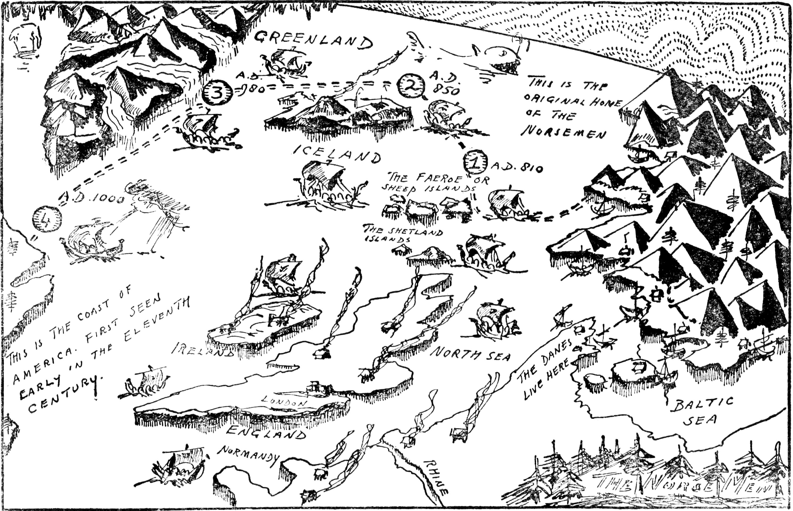
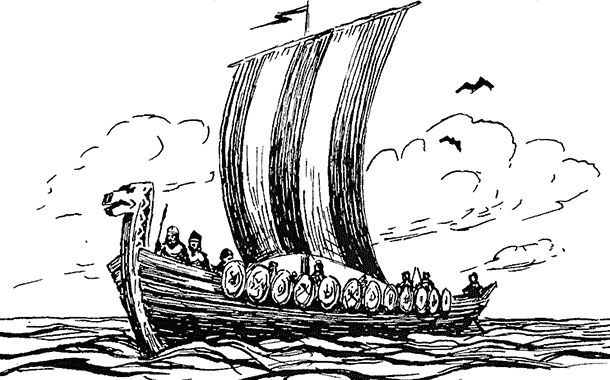
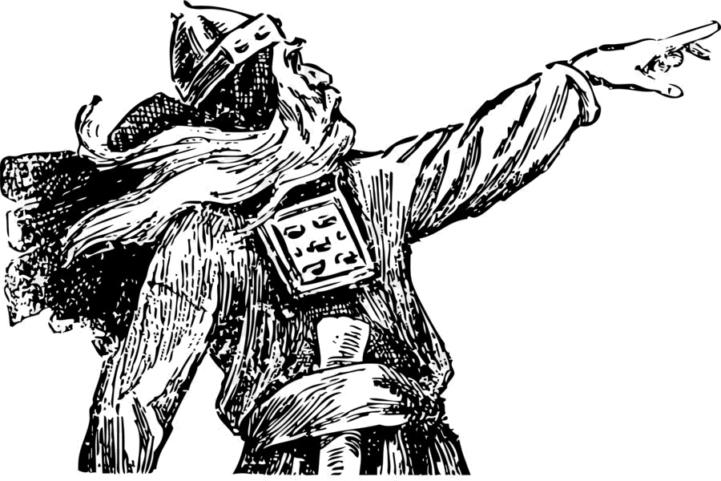
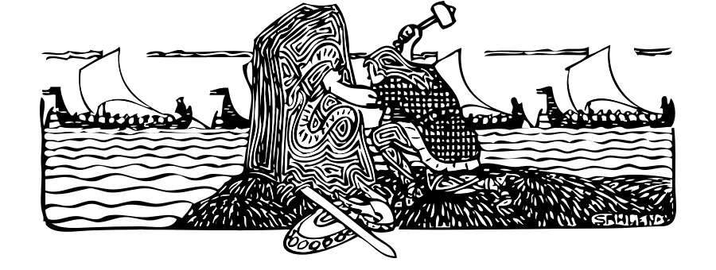
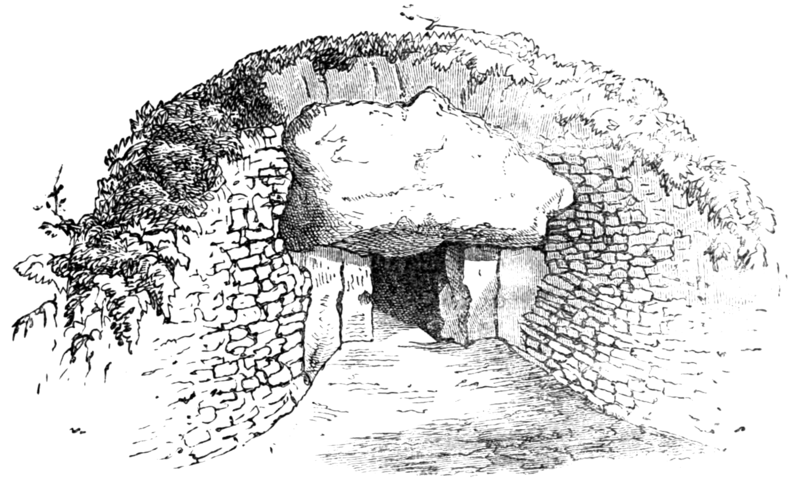
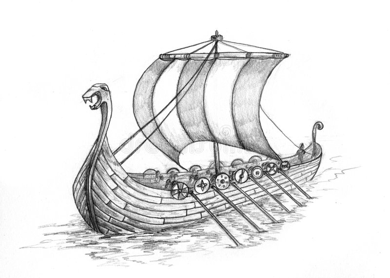
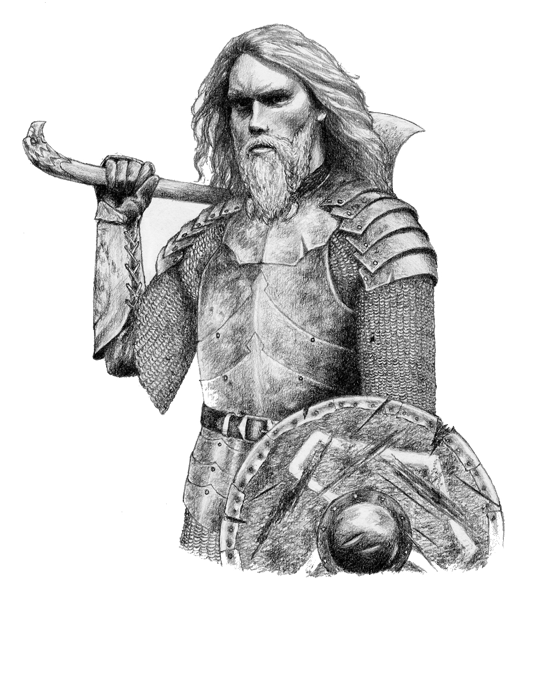

Vikingi
Vikingi
Vikingii erau poporul nordic maritim din sudul Scandinaviei (Danemarca, Norvegia și Suedia actuale) care de la sfârșitul secolului al VIII-lea până la sfârșitul secolului al XI-lea au atacat, prădat și stabilit în toate părțile Europei. De asemenea, au călătorit până la Marea Mediterană, Africa de Nord, Orientul Mijlociu și America de Nord. În țările în care au făcut raiduri și s-au stabilit, perioada este cunoscută sub numele de Epoca Vikingă, iar termenul „Viking” include, de asemenea, de obicei locuitorii țărilor nordice. Vikingii au avut un impact profund asupra istoriei medievale timpurii a Scandinaviei, Insulelor Britanice, Franței, Estoniei și Rusiei-Kievului.
Marinari și navigatori experți, la bordul navelor lor caracteristice, vikingii au stabilit așezări și guverne nordice în Insulele Britanice, Irlanda, Insulele Feroe, Islanda, Groenlanda, Normandia, coasta baltică și de-a lungul rutelor comerciale Nipru și Volga în ceea ce este acum Rusia europeană , Belarus și Ucraina (unde erau cunoscuți și sub numele de varegi). Din aceste colonii nordice au ieșit normanii, nordic-gaeli, poporul rus, feroezii și islandezii. Vikingii au călătorit, de asemenea, către Constantinopol, Iran și Arabia. Au fost primii europeni care au ajuns în America de Nord, stabilindu-se pe scurt în Newfoundland (Vinland). În timp ce răspândeau cultura nordică în țări străine, au adus simultan sclavi, concubine și influențe culturale străine în Scandinavia, influențând profund dezvoltarea genetică și istorică a ambelor. În timpul epocii vikingilor, patria nordică a fost consolidată treptat de la regate mai mici în trei regate mai mari: Danemarca, Norvegia și Suedia.

Istoria
Istoria
Se consideră că epoca vikingă din istoria scandinavă a fost perioada de la cele mai vechi raiduri înregistrate de nordici în 793 până la cucerirea normandă a Angliei în 1066. Vikingii au folosit Marea Norvegiei și Marea Baltică pentru rutele maritime către sud.
Normanzii au fost descendenții acelor vikingi cărora li s-a acordat domnia feudală a zonelor din nordul Franței, și anume Ducatul Normandiei, în secolul al X-lea. În această privință, descendenții vikingilor au continuat să aibă o influență în nordul Europei. La fel, regele Harold Godwinson, ultimul rege anglo-saxon al Angliei, avea strămoși danezi. Doi vikingi au urcat chiar pe tronul Angliei, Sweyn Forkbeard revendicând tronul englez în 1013 până în 1014, iar fiul său Cnut cel Mare fiind rege al Angliei între 1016 și 1035.
Din punct de vedere geografic, epoca vikingă acoperea ținuturile scandinave (Danemarca modernă, Norvegia și Suedia), precum și teritoriile aflate sub dominanța nord-germanică, în principal Danelaw, inclusiv Yorkul scandinav, centrul administrativ al rămășițelor Regatului Northumbria, părți din Mercia și Anglia de Est. Navigatorii vikingi au deschis drumul către noi ținuturi spre nord, vest și est, ducând la întemeierea așezărilor independente din Shetland, Orkney, Insulele Feroe, Islanda și Groenlanda.

Încă din 839, când se știe că emisarii suedezi au vizitat Bizanțul, scandinavii au servit ca mercenari în slujba Imperiului Bizantin. La sfârșitul secolului al X-lea, s-a format o nouă unitate a gărzii de corp imperiale. Conținând în mod tradițional un număr mare de scandinavi, era cunoscut sub numele de Garda Varangiană. Cuvântul varang poate să fi provenit din norvegianul vechi, dar în limba slavă și greacă s-ar putea referi fie la scandinavi, fie la franci. În acești ani, bărbații suedezi au plecat să se înroleze în Garda Varangiană bizantină în număr atât de mare încât o lege suedeză medievală, Västgötalagen, din Västergötland a declarat că nimeni nu ar putea moșteni în timp ce rămânea în „Grecia” - termenul scandinav de atunci pentru Imperiul Bizantin - să se oprească. emigrația , mai ales că alte două instanțe europene au recrutat simultan și scandinavi: Rusie c. 980-1060 și Londra 1018-1066
Există dovezi arheologice că vikingii au ajuns la Bagdad, centrul Imperiului Islamic. Norvegienii au furnizat în mod regulat Volga cu bunurile lor comerciale: blănuri, colți, grăsime de focă pentru etanșantul pentru bărci și sclavi. Porturile comerciale importante din această perioadă includ Birka, Hedeby, Kaupang, Jorvik, Staraya Ladoga, Novgorod și Kiev.
Expansiuna
Expansiuna
Colonizarea Islandei de către vikingii norvegieni a început în secolul al IX-lea. Prima sursă care menționează Islanda și Groenlanda este o scrisoare papală din 1053. Douăzeci de ani mai târziu, ele apar în Gesta lui Adam din Bremen. Abia după 1130, când insulele deveniseră creștinizate, nu s-au scris relatări despre istoria insulelor din punctul de vedere al locuitorilor în saga și cronici. Vikingii au explorat insulele și coastele nordice ale Atlanticului de Nord, s-au aventurat spre sud până în Africa de Nord, la est spre Rusul Kievan (acum Ucraina și Belarus), Constantinopol și Orientul Mijlociu.
Au făcut raiduri și au jefuit, au tranzacționat, au acționat ca mercenari și au stabilit colonii pe o arie largă. Vikingii timpurii s-au întors probabil acasă după raidurile lor. Mai târziu în istoria lor, au început să se stabilească în alte țări. Vikingii sub Leif Erikson, moștenitorul lui Erik cel Roșu, au ajuns în America de Nord și au înființat așezări de scurtă durată în actuala L'Anse aux Meadows, Newfoundland, Canada.

Expansiunea vikingilor în Europa continentală a fost limitată. Tărâmul lor era mărginit de triburi puternice spre sud. La început, sașii au ocupat Saxonia Veche, situată în ceea ce este acum Germania de Nord. Saxonii erau un popor acerb și puternic și erau deseori în conflict cu vikingii. Pentru a contracara agresiunea saxonă și a-și consolida propria prezență, danezii au construit imensa fortificație de apărare a Danevirke în și în jurul lui Hedeby.
Vikingii au asistat la supunerea violentă a sașilor de către Carol cel Mare, în cele treizeci de ani de războaie săsești din 772–804. Înfrângerea saxonă a dus la botezul lor forțat și la absorbția Saxoniei Vechi în Imperiul Carolingian. Teama de franci i-a determinat pe vikingi să extindă în continuare Danevirke, iar construcțiile de apărare au rămas în uz pe tot parcursul erei vikingilor și chiar până în 1864.
Coasta de sud a Mării Baltice a fost condusă de obotriți, o federație de triburi slave fidele carolingienilor și mai târziu imperiul franc. Vikingii - conduși de regele Gudfred - au distrus orașul obotrit Reric de pe coasta sudică a Mării Baltice în 808 d.Hr. și au transferat negustorii și comercianții la Hedeby. Acest lucru a asigurat supremația vikingilor în Marea Baltică, care a continuat de-a lungul epocii vikingilor.
Cultura
Cultura
O varietate de surse luminează cultura, activitățile și credințele vikingilor. Deși erau, în general, o cultură non-alfabetizată care nu producea nicio moștenire literară, ei aveau un alfabet și se descriau pe ei înșiși și lumea lor pe pietre de rulare. Majoritatea surselor literare și scrise contemporane despre vikingi provin din alte culturi care erau în contact cu ei. Începând cu mijlocul secolului al XX-lea, descoperirile arheologice au construit o imagine mai completă și mai echilibrată a vieții vikingilor. Înregistrarea arheologică este deosebit de bogată și variată, oferind cunoștințe despre așezarea lor rurală și urbană, meșteșuguri și producție, nave și echipamente militare, rețele comerciale, precum și artefacte și practici religioase păgâne și creștine.

Cele mai importante surse de informație despre vikingi sunt textele contemporane din Scandinavia și regiunile în care vikingii au fost activi. Scrierea în litere latine a fost introdusă în Scandinavia odată cu creștinismul, deci există puține surse documentare native din Scandinavia înainte de sfârșitul secolului al XI-lea și începutul secolului al XII-lea. The Scandinavians did write inscriptions in runes, but these are usually very short and formulaic. Most contemporary documentary sources consist of texts written in Christian and Islamic communities outside Scandinavia, often by authors who had been negatively affected by Viking activity.
Nordicul Norvegianul epocii vikingilor putea citi și scrie și utiliza un alfabet nestandardizat, numit runor, construit pe valori sonore. Deși există puține rămășițe de scriere runică pe hârtie din epoca vikingă, au fost găsite mii de pietre cu inscripții runice. Ele sunt de obicei în memoria morților, deși nu neapărat așezate la morminte. Utilizarea runorului a supraviețuit în secolul al XV-lea, utilizat în paralel cu alfabetul latin.
Pietrele de rulare sunt distribuite inegal în Scandinavia: Danemarca are 250 de pietre runice, Norvegia are 50, iar Islanda nu are. Suedia are între 1.700 și 2.500, în funcție de definiție. Districtul suedez Uppland are cea mai mare concentrație, cu până la 1.196 de inscripții în piatră, în timp ce Södermanland este al doilea cu 391.
În mod indirect, vikingii au lăsat, de asemenea, o fereastră deschisă asupra limbii, culturii și activităților lor, prin intermediul multor nume de loc și cuvinte vechi nordice găsite în fosta lor sferă de influență. Unele dintre aceste nume de locuri și cuvinte sunt încă în uz direct astăzi, aproape neschimbate, și dau lumină asupra locului în care s-au stabilit și a ceea ce însemnau locuri specifice pentru ei. Exemplele includ nume de locuri precum Egilsay (din Eigils ey care înseamnă Insula Eigil), Ormskirk (din Ormr kirkja care înseamnă Biserica Orms sau Biserica Viermelui), Meols (din merl însemnând Dune de Nisip), Snaefell (Snow Fell), Ravenscar (Ravens Rock) , Vinland (Țara Vinului sau Țara Winberry), Kaupanger (Piața Portului), Tórshavn (Portul lui Thor) și centrul religios din Odense, adică un loc unde se venera Odin. Influența vikingă este, de asemenea, evidentă în concepte precum corpul parlamentar actual al Tynwald pe Insula Man.
Cuvinte uzuale în limba engleză de zi cu zi, cum ar fi numele zilelor săptămânii (joi înseamnă ziua lui Thor, vineri înseamnă ziua lui Freya, miercuri înseamnă ziua lui Woden sau ziua lui Odin, marți înseamnă ziua lui Týr, Týr fiind zeul nordic al luptei unice, legii și justiției ), osie, escroc, plută, cuțit, plug, piele, fereastră, berserk, regulament, thorp, skerry, soț, păgân, iad, normand și răscolire provin din vechea norvegiană a vikingilor și ne oferă posibilitatea de a înțelege interacțiunile lor cu oamenii și culturile insulelor britanice. [129] În insulele nordice ale Shetland și Orkney, norvegianul vechi a înlocuit complet limbile locale și, în timp, a evoluat în limba Norn, acum dispărută. Unele cuvinte și nume moderne apar și contribuie la înțelegerea noastră după o cercetare mai intensă a surselor lingvistice din evidențele medievale sau ulterioare, cum ar fi York (Horse Bay), Swansea (Insula Sveinn) sau unele dintre numele locurilor din Normandia, cum ar fi Tocqueville ( Ferma lui Toki).
Înmormântările nordice sau obiceiurile de înmormântare ale nordicilor nord-germani ai epocii vikingilor (scandinavii medievali timpurii) sunt cunoscute atât din arheologie, cât și din relatări istorice, cum ar fi saga islandeze și poezia norvegiană veche. Există numeroase locuri de înmormântare asociate cu vikingii în toată Europa și sfera lor de influență - în Scandinavia, Insulele Britanice, Irlanda, Groenlanda, Islanda, Insulele Feroe, Germania, Marea Baltică, Rusia, etc. , de la morminte săpate în pământ, până la tumuli, incluzând uneori așa-numitele înmormântări ale navei.

Potrivit unor surse scrise, majoritatea înmormântărilor au avut loc pe mare. Înmormântările au implicat fie înmormântare, fie incinerare, în funcție de obiceiurile locale. În zona care este acum Suedia, incinerările erau predominante; în Danemarca înmormântarea era mai frecventă; iar în Norvegia ambele erau comune. Vagoanele vikinge sunt una dintre principalele surse de dovezi pentru circumstanțele din epoca vikingă. Obiectele îngropate împreună cu morții oferă unele indicații cu privire la ceea ce a fost considerat important de posedat în viața de apoi. Nu se știe ce servicii mortuare au fost date copiilor morți de către vikingi.
Printre cele mai recunoscute obiecte de cultură ale vikingilor se numără și stilul specific de construcțiile al ambarcațiunilor maritime. Au existat mai multe descoperiri arheologice ale navelor vikinge de toate dimensiunile, oferind cunoștințe despre măiestria care a dus la construirea lor. Existau multe tipuri de nave vikinge, construite pentru diverse utilizări; cel mai cunoscut tip este probabil navele de lungă durată. Navele lungi erau destinate războiului și explorării, concepute pentru viteză și agilitate și erau echipate cu vâsle pentru a completa vela, făcând posibilă navigarea independent de vânt. Longship-ul avea o carenă lungă, îngustă și un tiraj superficial pentru a facilita debarcările și desfășurarea trupelor în apă puțin adâncă. Navele lungi au fost utilizate pe scară largă de Leidang, flotele de apărare scandinave. Longship-ul i-a permis norvegienilor să meargă viking, ceea ce ar putea explica de ce acest tip de navă a devenit aproape sinonim cu conceptul de vikingi.

Vikingii au construit multe tipuri unice de ambarcațiuni, utilizate adesea pentru sarcini mai pașnice. Knarr era o navă comercială dedicată proiectată pentru a transporta mărfuri în vrac. Avea o carenă mai largă, un tiraj mai adânc și un număr mic de vâsle (utilizate în primul rând pentru manevrarea în porturi și situații similare). O inovație vikingă a fost „beitass”, un spart montat pe velă care le permitea navelor să navigheze eficient împotriva vântului. Era obișnuit ca navele vikinge navigante să tragă sau să transporte o barcă mai mică pentru a transfera echipajele și încărcătura de la navă la țărm. Armăsar de mare O navă reconstruităKnarr Haithabu Un model de tipul navei knarr Două nave tipice vikinge Navele erau o parte integrantă a culturii vikingilor. Au facilitat transportul zilnic peste mări și căi navigabile, explorarea de noi pământuri, raiduri, cuceriri și comerțul cu culturile vecine. De asemenea, au avut o importanță religioasă majoră. Persoanele cu statut înalt erau uneori îngropate într-o corabie împreună cu sacrificii de animale, arme, provizii și alte obiecte, dovadă fiind navele îngropate la Gokstad și Oseberg din Norvegia și înmormântarea navei excavate la Ladby în Danemarca. Înmormântările navelor au fost practicate și de vikingi în străinătate, dovadă fiind săpăturile navelor Salme de pe insula Saaremaa din Estonia.
Structura sociala
Structura sociala
Societatea vikingă era împărțită în cele trei clase socio-economice: Thralls, Karls și Jarls. Acest lucru este descris în mod viu în poemul Eddic din Rígsþula, care explică, de asemenea, că zeul Ríg - tatăl omenirii cunoscut și sub numele de Heimdallr - a creat cele trei clase. Arheologia a confirmat această structură socială.
Thralls erau clasa cu rangul cel mai scăzut și erau sclavi. Sclavii cuprindeau până la un sfert din populație. Sclavia a avut o importanță vitală pentru societatea vikingă, pentru treburile cotidiene și construcția la scară largă, precum și pentru comerț și economie. Thralls erau servitori și muncitori în fermele și gospodăriile mai mari din Karls și Jarls și erau folosiți pentru construirea de fortificații, rampe, canale, movile, drumuri și proiecte similare de muncă grea. Potrivit Rigsthula, Thralls erau disprețuiți și priviți de sus. Noile thralls au fost furnizate fie de fii și fiice ale thralls, fie capturate în străinătate. Vikingii deseori au capturat în mod deliberat mulți oameni în raidurile lor din Europa, pentru a-i înrobi ca niște thralls. Thralls au fost apoi aduși înapoi acasă în Scandinavia cu barca, folosite la fața locului sau în așezări mai noi pentru a construi structurile necesare sau vândute, adesea arabilor în schimbul argintului. Alte nume pentru thrall au fost „træl” și „ty”.
Karls erau țărani liberi. Ei dețineau ferme, terenuri și vite și se ocupau de treburile zilnice, cum ar fi arat câmpurile, mulsul vitelor, construirea de case și vagoane, dar foloseau thralls pentru a-și atinge capetele. Alte nume pentru Karls erau „bonde” sau pur și simplu bărbați liberi.
Jarli erau aristocrația societății vikinge. Erau bogați și dețineau moșii mari, cu case lungi uriașe, cai și multe thralls. Thralls-urile făceau majoritatea treburilor zilnice, în timp ce Jarls făceau administrație, politică, vânătoare, sport, vizitau alți Jarls sau plecau în străinătate în expediții. Când un Jarl murea și era înmormântat, sclavii din gospodărie erau uneori sacrificați și îngropați în mod sacrificial lângă el, așa cum au dezvăluit multe săpături.
În viața de zi cu zi, au existat multe poziții intermediare în structura socială generală și se crede că trebuie să fi existat o anumită mobilitate socială. Aceste detalii sunt neclare, dar titluri și poziții precum hauldr, thegn, landmand, arată mobilitate între Karls și Jarls.
Alte structuri sociale includeau comunitățile de félag atât în sfera civilă, cât și în cea militară, la care erau obligați membrii săi (numiți félagi). Un félag ar putea fi centrat în jurul anumitor meserii, a unei proprietăți comune a unei nave maritime sau a unei obligații militare sub un anumit lider. Membrii acestuia din urmă erau denumiți drenge, unul dintre cuvintele pentru războinic. De asemenea, existau comunități oficiale în orașe și sate, apărarea generală, religia, sistemul juridic și lucrurile.

Vikingii in cultura moderna
Vikingii in cultura moderna
Conduse de operele compozitorului german Richard Wagner, precum Der Ring des Nibelungen, Vikings și Romanticist Viking Revival au inspirat multe lucrări creative. Acestea au inclus romane bazate direct pe evenimente istorice, precum The Long Ships de la Frans Gunnar Bengtsson (care a fost lansat și ca film din 1963) și fantezii istorice precum filmul Vikingii, Eaters of the Dead de Michael Crichton (versiunea filmului numită 13th Warrior) și filmul de comedie Erik Viking. Vampirul Eric Northman, din seria TV HBO True Blood, a fost un prinț viking înainte de a fi transformat într-un vampir. Vikingii apar în mai multe cărți ale scriitorului danez american Poul Anderson, în timp ce exploratorul, istoricul și scriitorul britanic Tim Severin a scris o trilogie de romane în 2005 despre un tânăr aventurier viking Thorgils Leifsson, care călătorește în jurul lumii.
În 1962, scriitorul american de benzi desenate Stan Lee și fratele său Larry Lieber, împreună cu Jack Kirby, au creat super-eroul Thor Marvel Comics pe care l-au bazat pe zeul norvegian cu același nume. Personajul este prezentat în filmul Marvel Studios Thor din 2011 și continuările sale Thor: Lumea întunecată și Thor: Ragnarok. Personajul apare și în filmul din 2012 The Avengers și în serialul său animat asociat.
Apariția vikingilor în mass-media și televiziune populare a cunoscut o reapariție în ultimele decenii, mai ales cu serialul Vikings (2013) de la History Channel, în regia lui Michael Hirst. Spectacolul are o bază slabă în fapte și surse istorice, dar se bazează mai mult pe surse literare, cum ar fi fornaldarsaga Ragnars saga loðbrókar, ea însăși mai multă legendă decât fapt și poezie norvegiană eddică și skaldică. Evenimentele spectacolului fac frecvent trimiteri la Völuspá, un poem eddic care descrie creația lumii, adesea făcând referire directă la liniile specifice ale poemului în dialog. Spectacolul descrie unele dintre realitățile sociale ale lumii scandinave medievale, cum ar fi sclavia și rolul mai mare al femeilor în societatea vikingă. Spectacolul abordează, de asemenea, subiectele echității de gen în societatea vikingă, cu includerea fecioarelor scut prin intermediul personajului Lagertha, bazat și pe o figură legendară. Interpretările arheologice recente și analiza osteologică a săpăturilor anterioare de înmormântări vikingi au susținut ideea femeii războinice vikinge, și anume săpătura și studiul ADN al femeii războinice vikinge Birka, în ultimii ani. Cu toate acestea, concluziile rămân controversate.
Vikingii au servit ca sursă de inspirație pentru numeroase jocuri video, precum The Lost Vikings (1993), Age of Mythology (2002) și For Honor (2017). Toți cei trei vikingi din seria Vikingilor pierduți - Erik cel rapid, Baleog cel feroce și Olaf cel năprasnic - au apărut ca un erou jucabil în titlul de crossover Heroes of the Storm (2015). The Elder Scrolls V: Skyrim (2011) este un joc video de rol de acțiune inspirat puternic de cultura vikingă. Vikingii vor fi principalul obiectiv al jocului video Assassin's Creed Valhalla din 2020, care este stabilit în 873 d.Hr., și relatează o istorie alternativă a invaziei vikingilor din Marea Britanie.
Reconstrucțiile moderne ale mitologiei vikingilor au arătat o influență persistentă în cultura populară de la sfârșitul secolului XX și începutul secolului XXI în unele țări, inspirând benzi desenate, filme, seriale de televiziune, jocuri de rol, jocuri pe computer și muzică, inclusiv metalul viking, un subgen a muzicii heavy metal. Din anii 1960, a crescut entuziasmul pentru reconstituirea istorică. În timp ce primele grupuri aveau puține pretenții pentru acuratețea istorică, seriozitatea și acuratețea reconstituitorilor au crescut. Cele mai mari astfel de grupuri includ Vikingii și Regia Anglorum, deși există multe grupuri mai mici în Europa, America de Nord, Noua Zeelandă și Australia. Multe grupuri de reconstituitori participă la lupte din oțel viu, iar câteva au nave sau bărci în stil viking.
Final
Final
Atestat realizat de Gardean Andrei